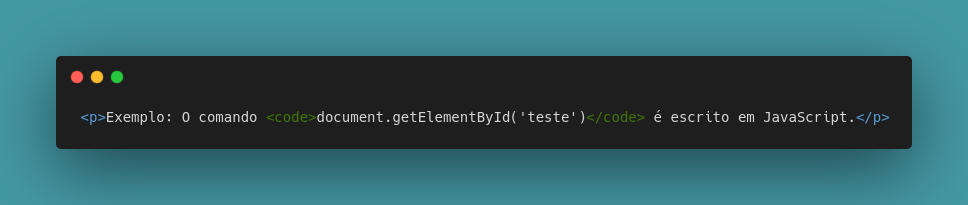

Código-fonte nada mais é podermos demonstar códigos de linguagens de programação em um documento HTML!
Para que possamos fazer isso, usamos a tag code, onde dentro dela, colocamos o código que queremos demonstrar.
Com ela, nosso código se torna monoespaçado, ou seja, os espaços distribuidos pelas letras se tornam iguais fazendo com que nosso texto fique visualmente melhor de ser visto e interpretado.
Exemplo: O comando document.getElementById('teste') é escrito em JavaScript.
Nota-se como o código ficou bem identado e com a formatação ideal de espaçamento.
Veja um exemplo sem a tag code:
Exemplo: O comando document.getElementById('teste') está em JavaScript.
Faça a comparação e veja a diferença!
Dê uma olhadinha no código - Usando a tag code: 👀
Entretanto.. Se fizermos uma demonstração de código que é necessário de uma identação maior e não é apenas demonstrado em uma linha apenas - como acima -, ou seja, uma série de códigos que se interligam, apenas a tag code não irá conseguir fazer a demonstração certa!
Vamos ver abaixo uma demonstração de código da linguagem Python.
Exemplo apenas com a tag CODE:
num = int(input("Digite um número: "))
if num % 2 == 0:
print("O número {} é PAR".format(num))
else:
pritn("O número {} é ÍMPAR".format(num))
print("Fim do Programa!")
Percebe-se que os código em Python não ficaram identados como deveriam ficar. Ficam postos um na frente do outro, sem nenhum tipo de formatação.
Para resolvermos esse tipo de problema, usamos então a tag pre e dentro dela, colocamos a tag code com os códigos que queremos demonstrar.
Exemplo do uso da tag pre:
num = int(input("Digite um número: "))
if num % 2 == 0:
print("O número {} é PAR".format(num))
else:
pritn("O número {} é ÍMPAR".format(num))
print("Fim do Programa!")
Agora sim, nosso código ficou identado e bem feito!
Dê uma olhadinha no código - Usando a tag pre: 👀
.png)
Uma dica! 😄
Caso você queira tirar o espaço que fica atrás dos códigos, é só seleciona-los e apertar as teclas shift+tab em conjunto. E caso você ainda queira um espacinho, selecione tudo e clique na tecla tab.